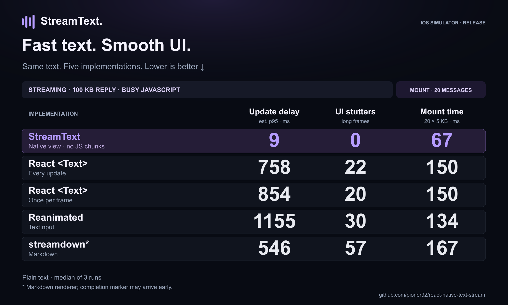

iOS SIMULATOR · RELEASE · 13 OCTOBER 2026
StreamText: benchmark evidence
45 streaming runs and 12 mount runs, all complete. Each cell shows the median of three repetitions; parentheses show the full observed range. Every run is included.
Main social card (PNG) · Editable SVG · All latency scenarios + mount

Busy JavaScript: the main card
S4: a 100 KB plain-text answer, 256-byte target chunks at 80 chunks/s (~20 KB/s), plus 40 ms of busy JS work every 100 ms. Every implementation uses the same native bottom-anchored chat container. The card selects this explicit workload; it does not combine each competitor’s worst scenario.
Mount: 20 finished messages
20 messages × 5 KB requested (5,012 actual UTF-8 bytes per message), 408-point container, font size 14 and line height 21. Text and buffers are loaded before timing. All 20 views mount in a clipped plain container without list virtualization. This measures mounting ready content, not network download or application startup.
The two React streaming strategies share the same finished-message mount implementation, so their mount value is repeated on the card. Reanimated uses the same animated TextInput approach as its streaming row.
Other measured streaming workloads
S1 · Short reply, 5 KB at ~0.8 KB/s
S2 · Long reply, 100 KB at ~20 KB/s
What the columns mean
- Update delay: the estimated elapsed time from the server writing bytes to a native UI marker covering those bytes. p95 is calculated over server send events in each run; the card takes the median of three run-level p95 values. It is not a measured photon/pixel presentation timestamp.
- UI stutters (hitches): the count of CADisplayLink timestamp gaps greater than 1.5 times the expected frame interval. At 60 Hz that means a gap longer than about 25 ms. This is a UI-thread frame-gap proxy, not a compositor-measured count of dropped frames.
- Estimated missed intervals: for each hitch, rounded(gap / expected interval) − 1, summed over the run. Kept in this report, not labeled as actual dropped display frames on the card.
- Longest UI frame: the largest gap between display-link timestamps. This captures long UI stalls that a hitch count alone does not describe.
- Mount time: elapsed time from requesting the mounted tree to a native timestamp after two frame markers following React commit. StreamText additionally waits for all 20 views to report done. Frame monitoring continues until ten on-time frames, with bounded waits.
Comparison boundaries
StreamText uses its own native streamFetch → native view path, with zero JS chunk callbacks. The four JS strategies use React Native XMLHttpRequest progress; nitro-fetch is not used. This compares complete implementations, including their transport paths, rather than isolating only the renderer. React’s frame-batched strategy is included.
streamdown also parses Markdown even though the input is plain text. Its asynchronous rendering can finish after the timing marker; its delay and mount times are optimistic estimates. A fast mount marker does not guarantee that all later Markdown work has finished. For example, one streamdown mount marker was 55 ms while its longest observed frame was 174 ms. The full range is retained above.
Mount order rotates per repetition. Message prefixes differ across messages and repetitions to avoid repeating identical layout-cache keys; the StreamText prepared-layout cache is cleared before each cell. All variants receive the same text within a repetition. Streaming variant order also rotates. No UI inspection occurred during timed runs.
Clock offset is sampled before each streaming run using the lowest-latency of 12 requests. Selected round-trip times were 8–16 ms, so small millisecond differences should not be treated as precise speed ratios. The card rounds times to whole milliseconds. Three repetitions give a descriptive result, not a population confidence interval.
Environment and reproducibility
iPhone 17 Pro Max Simulator, iOS 26.5; Apple M3 Max, 96 GiB RAM. Same arm64 Release binary and production JS bundle for both suites. These are simulator results, not physical-iPhone measurements. Other host workloads and refresh behavior were not experimentally locked. Benchmark helpers and installed native devtools instrumentation were present.
react 19.2.3, react-native 0.86.0, react-native-reanimated 4.7.1, react-native-streamdown 0.3.0, react-native-worklets 0.13.0, react-native-enriched-markdown 1.1.1.
Source base: 23757421367b5f014007a59a14276799b6c7a57b plus the benchmark harness and existing chat-container changes identified by SHA-256 in environment.json.
rtk proxy python3 scripts/build-social-bench-ios.py
# Install the resulting Release simulator app, then run Streaming and Mount once.
# Copy the two saved JSON files to raw-streaming.json and raw-mount.json.
rtk proxy python3 media/benchmark-card-v2/summarize.py
rtk proxy python3 media/benchmark-card-v2/render.py media/benchmark-card-v2/data.json --focused --out media/benchmark-card-v2/benchmark-table-focused.svg --png
rtk proxy python3 media/benchmark-card-v2/render-methodology.py
The build script temporarily selects S1/S2/S4 × A1/A2/B1/B2/D × 3 and restores the original configuration. The local streaming server must be running on port 9877. Raw files preserve all observations, including outliers.
- raw-streaming.json
049972f62ca9eb1525a83bbc21baf6ecbfb79c60255a38b38b07d11b9153abb0 - raw-mount.json
d60b06ac848f2e464bdad822ab3f7e09c615513c0efc0763207b73ae2f105b28 - summary.json
d7f29ed1125663b8cd4f97517a4e9ec16b063cede671ac63295ecd3a50c984cc - environment.json
269d39570c3758aa8a094e0fd59dc543ba956fd12b2a5676ded035498134f7ab
Raw observations, source fingerprints, and rendering scripts are included with these results.